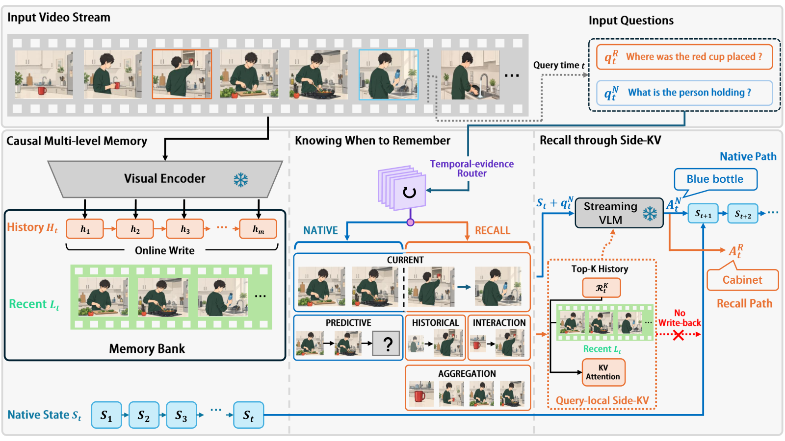

Paper Analysis
01 · The Question Before Retrieval

Yi Chen et al. · Original figure, unmodified · Limited excerpt for scholarly analysis; arXiv deposit license is perpetual non-exclusive, not a CC reuse license · Paper & Caption ↗
同一时刻，“现在手里拿着什么”和“之前把杯子放到哪里”需要不同的时间证据。前者可能由当前流式状态回答，后者需要早先已经离开近期窗口的信息。FlashBack 先决定要不要进入 Recall，再在需要时检索历史，而不是默认给所有问题补一段过去。
它使用冻结的 StreamingVLM-7B 与 Mage-VL-4B，不添加可训练融合网络。输出是视频问题的答案，实验主要通过有限候选的 next-token logits 选择答案；不是自由生成长解释的评测，也不输出三维地图。
论文于 2026-10-01 首次公开，本次读 v1。它超出最近 30 天窗口，纳入扩展的 90 天阅读范围，用来补充语义如何控制读取这一机制；没有把版本刷新当作新论文。
原图左侧是在线档案，中间是时间证据判断，右侧是 Native 与 Recall 两条计算路径。两条路径复用同一个冻结 decoder，不是两套独立训练的模型。底部 Native state 持续推进；橙色临时 Recall 状态仅为当前问题服务。
Paper Analysis
02 · Online Writing Does Not Mean Bounded Storage
系统并行保留 Native streaming state 和辅助 memory bank Bₜ=(Hₜ,Lₜ)。Lₜ 保存近期视觉上下文；Hₜ 保存已完整观察的历史 page，每页带时间区间和模型内部视觉表示。写入发生在流到来时，而不是收到问题后回看完整视频重建档案。
StreamingVLM 使用最长四秒的 page、16 秒近期上下文，主实验采样 2 FPS；Mage-VL 使用四个采样帧为一页、16 帧近期上下文，采样 1 FPS。秒与帧不能互换，也不能把两种骨干的结果当成控制采样率后的架构比较。
StreamingVLM 存检索层 KV、后续重建 page 所需的视觉表示及压缩检索特征，完整层 PageKV 按需生成。Mage-VL 存 token IDs、输入 embedding、视觉位置等，候选 decoder keys 也按需构造。这样减少预先物化所有层 KV 的成本，但仍保留历史内容。
附录明确：长期 Hₜ 没有容量限制，也不淘汰已完成 page；存储近似随视频时间线性增长。Native state 有界、每次只读 K=1 页，都不等于总内存有界。预筛还需扫描 eligible archive，检索成本也随档案增长。
Paper Analysis
03 · Semantic Routing Is Question-Only
router 只接收规范化后的问题文字，保留时间限定，去掉纯答案格式要求；不看视频、memory、候选答案、分支预测、检索分数或真值。它判断的是请求所需的时间支持，而不是检查当前模型是否已经知道答案。
第一阶段分 Current、Historical、Interaction、Aggregation、Predictive。历史事实、事件关系和跨时间汇总进入 Recall；未发生结果的预测进入 Native；当前问题再细分 Boundary、Ongoing、Persistent、Outcome，前两类走 Native，后两类走 Recall。
这种映射有可解释性，但也是固定设计：一个未来预测可能确实受长期历史影响，仅凭“Predictive→Native”不能保证最优。它也无法知道某个过去事实是否仍被 Native cache 保留，因为 router 不读取实际状态。
为减轻选项位置和编码偏置，第一阶段构造五种类别顺序与输出编码轮换，第二阶段四种。把各 view 的 code log-probability 映射回同一语义类别后求平均，再取最大类。它不是多数投票，也不是一次零成本分类。
直接二分类 baseline 也采用两个平衡 view，因此不能把结构化路由优势完全解释成“只有它做了去偏置”；但两者调用次数不同，仍不是完全相同推理预算。没有训练新 loss，不代表没有设计复杂度与额外计算。
semantic class c = argmax_c mean_v log p(code_v(c) | prompt_v(question)) action = fixed_mapping(c) Historical / Interaction / Aggregation → Recall Boundary / Ongoing / Predictive → Native
Paper Analysis
04 · How a Historical Page Is Retrieved
只有 Recall 才检索长期档案；eligible page 必须已完整观察，且结束于近期窗口开始之前，避免未来泄漏和最近内容重复。若没有 eligible history，仍运行 recent-only Recall，不自动回退为原 Native。
预筛用问题以及可用的各个“问题—选项”假设，与 page 的紧凑视觉状态做 late interaction：对每个文本 token 找最相似的视觉状态，再对文本 token 求均值。每个假设取 Top-1，去重形成小候选集。所有选项被对称使用，没有使用正确选项标签。
因此“router 不看答案候选”和“retriever 可以使用候选选项”并不矛盾，两个阶段的输入不同。候选页也不是单个视觉 token，而是完整的几秒片段。
重排使用冻结 decoder 内部 Q–K：query 来自关闭长期检索时的答案决策 token，历史 page 提供视觉 keys。在指定层和 heads 上计算长度归一化 log-sum-exp，再平均；减去 log Nᵢ 避免仅凭页内 token 更多获得额外分数。它不是 pooled CLIP cosine。
默认 K=1。StreamingVLM 用第 10–17 层、Mage-VL 用 14–21 层重排（从零计数）；真正 Recall 仍经过完整 decoder。候选不足时不补齐，也不重新遍历全部历史扩张。检索层少不等于回答只运行这些层。
prefilter(x, page_i) = mean_u max_v cosine(text_embedding_u, visual_state_v) score_i = mean_(layer,head) [log Σ_v exp(scale · qᵀk_iv) − log N_i]
Paper Analysis
05 · Side-KV and State Lifetime
被选中的 page 与近期上下文在临时路径中交给 query。StreamingVLM 的历史 PageKV 与近期 cache 分别构建，再按约定的多模态位置布局组合；两段不会先相互条件化重算。Mage-VL 则从归档表示物化 page，再依次处理近期上下文和问题。两种实现都保持只读旧档案、临时回答的边界。
回答结束后释放 query-local KV，保留原 Native streaming state 继续接收后续帧。历史 page 本身仍在 archive 中，不会因用过一次而删掉。No Write-back 指的是不把这次问题选择造成的临时推理状态写回持续状态。
直观原因是：为问题 A 选出的历史，不一定应改变问题 B 到来前的每一次视觉处理。状态隔离可以避免这种前向依赖，但它不是证明 Recall 答案一定正确；同一旧图像也可能引入错误细粒度判断。
表 3 的对照尤其要读清楚。Historical/Random/Zero KV 都插到 Native cache 的 query-specific clone，回答后也不影响持续状态。Side-KV 优于这些对照，支持的是不同上下文接口的效用；该表并没有比较“长期写回”与“不写回”的累积误差。
在相同选中 page 的条件下，Historical KV 的 MA/CRR 为 64.40/45.83，Side-KV 为 70.40/60.83；Random 和 Zero 更差。匹配证据与页容量有助于隔离接口因素，但上下文构造本身仍不同，不能把全部差值归于某一个未经单独消融的设计。
Paper Analysis
06 · Reading the Results Without Hiding Regressions
MA 是 StreamingBench 的 Multimodal Alignment 子任务，CRR 是 OVO-Bench 的 Clues Reveal Responding。消融使用相同 Native/Recall 答案，只改变路由选择，避免分支重新运行带来的混杂。结构化路由把 MA 从 Native 的 69.60 提高到 72.80，CRR 从 41.67 到 60.83。
但 recent-only Recall 的 MA 为 73.60，高于加一页的 72.80；CRR 则从 recent-only 的 55.42 升到 60.83。更多历史对两种任务方向不同，K=3 或 5 没进一步改善 CRR。因此“是否读”与“读多少”都应以任务证据验证。
在完整 OVO-Bench 上，StreamingVLM 的 realtime 平均从 71.66 降至 70.85，backward 从 46.53 降至 44.92，forward 从 34.59 升至 41.22；HLD 从 27.96 降至 23.12。不能只引用 CRR 的大幅提升就说历史理解全面改善。
Mage-VL 的 OVO overall 从 58.27 到 61.02，但 StreamingBench contextual 平均从 62.13 降至 61.07。论文认为旧信息可能干扰拒绝无根据前提、区分当前与过时状态等任务；这与语义相似不保证证据仍有效相一致。
附录 Oracle 只在 Native 与 Recall 已有输出至少一条正确时成功，MA 上界 78.80、CRR 上界 65.42。它使用答案真值，仅是分析上界，部署不使用。超过 92% 的 selection success 只统计至少一条分支可答对的子集，不是全体问题准确率。
| StreamingVLM setting | MA ↑ | CRR ↑ | Meaning |
|---|---|---|---|
| Native | 69.60 | 41.67 | 原始持续状态 |
| Always Recall | 70.40 | 60.83 | 全部问题进入 Recall |
| Structured routing | 72.80 | 60.83 | 按时间语义选择路径 |
| Recent-only Recall with routing | 73.60 | 55.42 | 没有远期 page |
| Trajectory oracle | 78.80 | 65.42 | 不可部署的真值分析上界 |
Paper Analysis
07 · Cost, Transfer, and the Remaining Experiment
效率实验在单 A100-80GB 上处理十段视频前缀、26 个查询，总视频时长 1,046.5 秒，两次重复并交换系统运行顺序。计时包括采样、memory 维护、router、检索与回答；不含加载和 warm-up。论文在 1/2 FPS 采样负载下报告处理速度高于输入速度。
这是未按真实时间等待的 aggregate throughput，不是每个问题的响应延迟上界，也不是能实时处理全部 30 FPS 原视频的证据。查询密度增加、档案变长或频繁 Recall 时，成本可能变化。
与我们的重建任务相比，这里的语义是“问题要求什么时间证据”，不是像素的对象语义。LingBot-Map 没有天然的文本问题驱动路由，不能照搬类别映射。可迁移的原则是：历史相关性、历史时效性、读取后是否写回，是不同决策。
一个待检验的几何诊断是，在固定缓存与匹配计算预算下，比较持续使用历史、选择性读取历史、临时几何细化后不写回三种状态路径，观察当前误差和后续帧漂移。若再加语义，应检验它是否更准确地识别有用历史，而不是仅增加计算。
FlashBack 没有训练或验证三维几何，也没有实现固定总容量的语义 memory。它为读取接口与证据有效性提供参考；我们的“语义参与写入”仍需独立实验。论文称代码稍后公布，本次未确认可用官方实现，因此不声称完成实现层核查。
Discussion
Reading Questions
Does the router inspect visual memory?
不看。它只根据问题文字判断时间证据需求，实际历史内容在之后的检索阶段才被访问。
Does K = 1 imply fixed total memory?
不意味着。K 限制当前读取页数；长期档案未设置容量或淘汰规则，仍近似随时间线性增长。
Does Table 3 prove the benefit of no write-back?
不能单独证明。hard-insertion 对照也使用临时 clone，不改持续状态；表中直接检验的是上下文接入方式。
Can relevant history still hurt?
可以。附录车辆识别案例检索到了目标，却把正确 Sedan 改成 SUV；相关证据不等于模型能正确利用它。
References
- Original Paper ↗
- Submission and Version History ↗
- Related Note: ReMem ↗
- Related Note: OASIS Mapping ↗
- Related Note: Semantic Memory Supervision ↗
One original method figure is included as a limited scholarly excerpt, with author and source attribution. The arXiv deposit license does not grant a general reuse license. Results are author-reported; no local reproduction has been performed.
Verified on 2026-11-06. Paper results refer to the linked versions. Repository references were checked on this date.